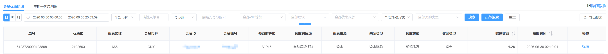

优惠明细 · 操作与运营教程
汇集所有用户从各模块领到的奖励，按来源、账号、时间等条件查询核对并导出。
一、功能概述
| 是什么 | 把所有用户从各模块领到的奖励汇集到一处的查询页，用于查询、核对、导出。 |
| 两个页签 | 会员优惠明细；主播号优惠明细——主播号是用于直播演示的账号类型，不能充值提现但有账变记录，单独成表展示。 |
| 只读 | 纯记录与查询，只新增数据、不编辑不修改，也不在此发奖或审核。 |
二、查询与筛选
 |
顶部按条件组合后点【搜索】查询、【导出报表】导出。常用条件：时间、币种、单号、会员账号/ID、VIP 等级、层级、优惠来源、来源类型、活动ID、领取方式、奖励类型。
| 时间筛选 | 列表默认按【日】查询，可切换日 / 周 / 月，或自定义起止时间。 |
| 高级搜索 | 点【高级搜索】可批量输入会员账号或ID（最多 1000 个，逗号拼接），再组合币种、单号、等级、层级、优惠来源、赠送金额区间、领取方式、获取时间、奖励类型等条件精确查询。 |
| 查询范围 | 按单个会员查询、或按单个活动查询时，支持不限时间、可查全部；若不加任何筛选直接查全部，单次最多查询 1 个月范围的数据，需要更早的可按时间段分批查询。 |
三、列表说明
列表每行是一笔奖励记录，含单号、优惠ID与名称、会员信息、优惠来源、来源类型、领取方式、奖励类型、赠送奖励、获取时间，底部有赠送奖励合计。其中【领取时等级】【领取时层级】是会员领取该奖励当时的快照，记录后不随会员后续升降级变化，便于事后核对当时资格。
四、优惠来源与来源类型
优惠来源（奖励来自哪个模块，共 17 类）：活动、任务、返水、返佣、VIP奖励、利息宝、幸运转盘、公积金、盲盒抽奖、充值优惠、银商结算、SVIP奖励、积分抽奖、折扣券、意外惊喜、商城、特邀奖励。其中返佣是代理佣金、银商结算是代理给下级的转账金额、特邀奖励是代理推荐好友奖励，其余对应各优惠模块。
来源类型（优惠来源为活动时的活动子类）：充值活动、打码活动、救援金活动、新手救援金、红包活动、签到活动、幸运转盘活动、幸运注单活动、推广活动、投资活动、投资扣款、代理活动、集字活动、自定义活动、有奖反馈、竞猜活动、抽奖助力活动、砍一刀、新砍一刀、新人彩金、排行榜活动、回归彩金、渠道奖励、提现活动、留存活动。
五、常见问题
Q：优惠明细能在这里发奖或审核吗？
A：不能。这里只做查询、核对和导出，发奖在各对应模块或【领取与审核】处完成。
Q：不加筛选能一次查全部吗？
A：不加任何筛选直接查全部时，单次最多查 1 个月数据，可按时间段分批查询；查单个会员或单个活动则可全量查。
Q：主播号优惠明细和会员优惠明细有什么区别？
A：主播号是用于直播演示的账号类型，不能充值提现但有账变记录；它的奖励明细单独放在主播号优惠明细页签，结构与会员一致。